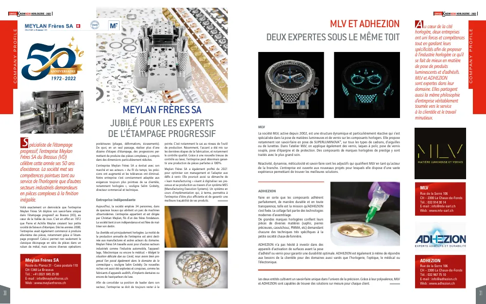
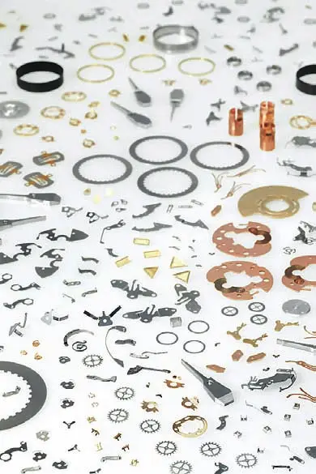
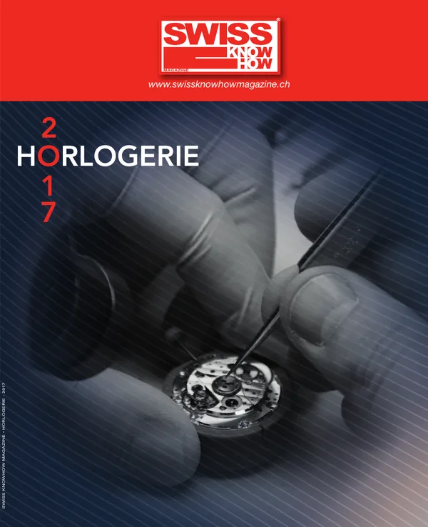

Publireportage · Swiss Knowhow – Horlogerie 2023 : la sous-traitance horlogère
Meylan Frères SA – Experts de l'étampage progressif de précision
Spécialiste de l’étampage progressif, l’entreprise Meylan Frères SA du Brassus (VD) met ses compétences pointues tant au service de l’horlogerie que d’autres secteurs industriels demandeurs en pièces complexes à la finition inégalée.
Active dans l’étampage progressif, Meylan Frères SA au Brassus (VD) vient de fêter ses cinquante ans d’existence. Un âge de raison, qui incite à jouer la consolidation pour assurer l’avenir. La société emploie aujourd’hui 34 personnes, dans de spacieux locaux qui abritent un parc de machines ultra-modernes. L’entreprise appartient et est dirigée par Christian Meylan, fils d’un des frères fondateurs. Elle tient à son indépendance et est fière de maîtriser son destin.
Etamper des pièces aussi minuscules que complexes, c’est le cœur de métier de Meylan Frères SA, société passée maîtresse dans la technique de l’étampage progressif. Celui-ci permet non seulement le classique découpage en série de pièces dans un ruban de métal, mais encore diverses opérations postérieures (pliages, déformations, écrasements). De quoi, en un seul passage, réaliser plus d’une dizaine d’étapes d’étampage, des progressions permettant de produire des pièces complexes, y compris dans des dimensions particulièrement réduites. En fonction des éléments finaux à produire, la société Meylan Frères SA fabrique ses propres étampes avant de lancer la production de séries plus ou moins importantes.
Clientèle horlogère
Sa clientèle est principalement horlogère. La moitié de la production annuelle de l’entreprise est ainsi destinée aux manufactures et autres acteurs du domaine. Meylan Frères SA travaille aussi pour d’autres secteurs industriels comme l’industrie automobile, l’appareillage, l’électronique ou encore le médical. De nouvelles niches ont aussi été explorées et conquises, comme la connectique, les fabricants d’appareils auditifs, d’implants dentaires ou encore de haut-parleurs de luxe.
Voilà exactement un demi-siècle que l’entreprise Meylan Frères SA déploie son savoir-faire unique. C’est en effet en 1972 que Pierre et Achille Meylan créaient leur petite société de faiseurs d’étampes. Dès les années 2000, l’entreprise avait également commencé à produire elle-même des pièces, notamment grâce à l’étampage progressif. La société a évolué avec son marché et ses acteurs. Elle s’est constamment adaptée aux exigences toujours plus pointues de sa clientèle, notamment horlogère.
Leader du marché
Afin de consolider sa position de leader dans son secteur, l’entreprise se doit de toujours rester à la pointe. C’est le cas au niveau de l’outil de production, mais également au plan du management. Pour l’adapter aux défis à venir, l’entreprise poursuit sa démarche de « lean manufacturing » visant à digitaliser ses processus et sa production au travers d’un système MES (Manufacturing Execution Systems). Un système en cours d’implémentation qui, à terme, permettra à l’entreprise d’être plus efficiente et de garantir une meilleure traçabilité de ses produits.
Texte paru dans Swiss Knowhow – Horlogerie 2023 : la sous-traitance horlogère, p. 26, tel que publié dans l'édition imprimée. En cas d'écart, la version imprimée fait foi.
Photos
Articles
Meylan Frères SA – Experts de l'étampage progressif de précision
Cinquante ans d'étampage au Brassus

Publireportage · texte intégralMeylan Frères SA – Jubilé pour les experts de l’étampage progressif
50 ans d’étampage au Brassus
Meylan Frères SA – Experts de l'étampage progressif
Pièces étampées minuscules et complexes
Meylan Frères SA – Étampeur au service de l’horlogerie
Le spécialiste de la pièce micromécanique
Meylan Frères SA – Experts de l'étampage progressif
Micro-pièces étampées au Brassus
Meylan Frères SA – Le spécialiste du découpage progressif
Le Brassus

Publireportage · texte intégralMeylan Frères SA – Le spécialiste du découpage progressif
Meylan Frères SA – The progressive cutting specialist
Parutions
- Swiss Knowhow – Horlogerie 2023 : la sous-traitance horlogère2023 · page 26PDF

- Swiss Knowhow – Horlogerie 20222022 · page 30PDF

- Swiss Knowhow – Horlogerie 20212021 · page 25PDF

- Swiss Knowhow – Horlogerie 20192019 · page 47PDF

- Swiss Knowhow – Horlogerie 20172017 · page 33PDF

- Swiss Knowhow – Sous-traitance horlogère 20162016 · page 116PDF

- Swiss Knowhow – Industrie horlogère 2015/20162015 · page 62PDF